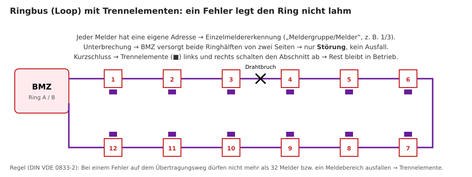

Lernsituation 5 · Brandmeldeanlagen
Meldergruppen · Ringbus · Leitungen · Akkuberechnung · Alarmschallpegel
Informationselektroniker/-in · Gebäude- und Sicherheitstechnik · LF 9 · Jgst. 12 · Leitsituation: Kunsthaus am Roten Main
Frage vom Monteur
„Wie verlege ich das? Alles in einem Strang? Und welche Akkus bestelle ich für die Zentrale?“
Ordnung schaffen
Stich oder Ring?

Stichtechnik nur bei sehr kleinen Anlagen: Dort wird nur die Gruppe angezeigt, und ein Fehler legt die ganze Gruppe lahm.
Leitungen
J-Y(St)Y 2×2×0,8, roter Mantel „Brandmeldekabel“ üblich, aber nicht vorgeschrieben · gegen Beschädigung schützen
Die Alarmierung muss im Brand 30 min weiterlaufen → z. B. JE-H(St)H … FE180/E30 mit zugelassenem Tragsystem. Gilt auch für die Leitung zum FAT außerhalb des BMZ-Raums.
Energieversorgung
| Größe | Bedeutung |
|---|---|
| tR | 30 h bei Störungsweiterleitung und Instandsetzung ≤ 24 h, sonst 72 h |
| tA | 0,5 h Alarmbetrieb |
| 1,25 | Alterungsreserve (am Ende noch 80 % Kapazität) |
| 24 V | 2 × 12 V in Reihe → die Kapazität bleibt gleich! |
Kunsthaus
IR = 0,21 A · IA = 0,85 A · Wartungsvertrag → tR = 30 h
C = 1,25 · (0,21 A · 30 h + 0,85 A · 0,5 h) = 1,25 · 6,725 Ah = 8,41 Ah
→ 2 × 12 V / 12 Ah in Reihe. Ohne Wartungsvertrag (72 h): 19,43 Ah → passt nicht ins Gehäuse (max. 17 Ah) → Zusatzgehäuse oder Wartungsvertrag verkaufen 😉
Alarmierung
Säge ≈ 88 dB(A) → Alarm ≥ 98 dB(A)?
→ zusätzlich optischer Signalgeber (Blitz)
Ziele
Arbeitsauftrag
IB 5 + Ringbusgrafik
AB 5, A1: Meldergruppen + Ring in den Plan
A2 Akku, A3 Leitungen/Alarmierung · Erweiterung A4 Spannungsfall
Lösungskarte, Fragen klären